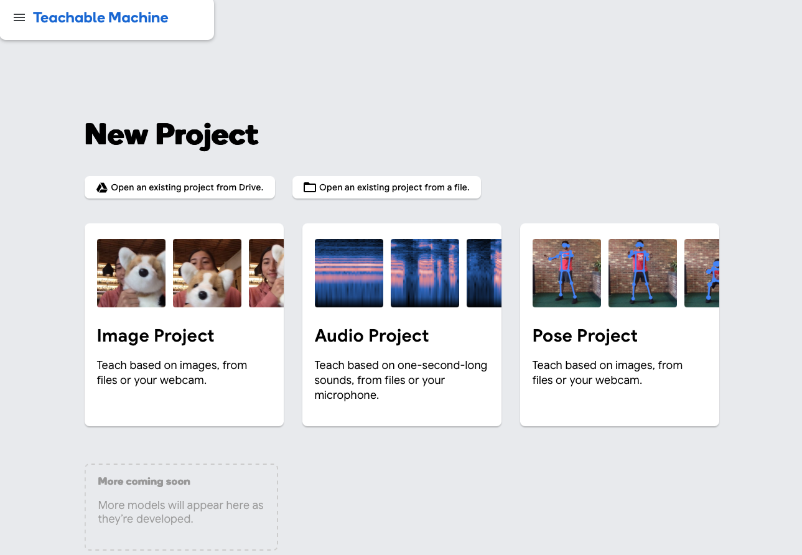

In this project I learned how to use Google’s Teachable Machine to train a model that reacted to images, audio, and motion via webcam. For my project I developed a color identifier for SVG images (Scalable Vector Graphics). I first trained the model with over six color categories, each with about 50 examples. Due to the webcam’s poor quality, it often misclassified colors, usually defaulting to red. After adjustments, I reduced the categories to three (red, blue, and yellow). It then achieved more accurate results. Once the model was working, I imported it into JS to use it outside of the platform on my coded website. Overall, this project improved my understanding of training machine learning models and showed how accessible tools like Teachable Machine can be for creating interactive applications. Besides that, it was very inspiring to see the websites of the other students.
to final project github repository projects